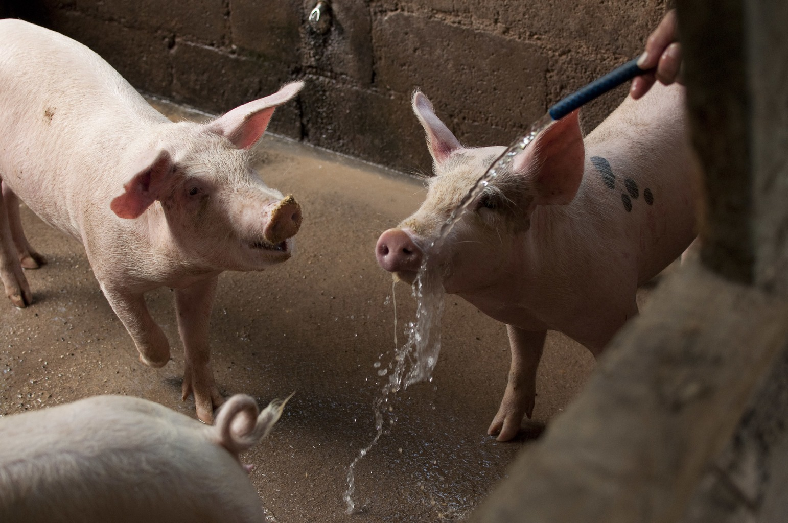

Mantenimiento en el área porcina
El éxito de la producción porcina depende directamente de la higiene y el orden de las instalaciones de un ambiente limpio reduce el estrés de los cerdos, previene enfermedades y optimiza.

limpieza diaria y Desinfectación
El mantenimiento preventivo es la mejor herramienta contra patógenos limpiar las de inyecciones y orina al menos dos veces al día para evitar la acumulación de amoniacos, utilizar agua a presión para eliminar restos orgánicos en pisos aplicar productos específicos tras la limpieza profunda, especialmente en los cambios de lote.

Control del sistema de agua y Alimentación
Revisar que el agua esta fresca y los chupones o tazas no tengan sedimentos ni moho, vaciar y limpiar los restos de alimentos viejos que pueden fermentarse o atraer plagas, realizar análisis físico y microbiológicos la menos dos veces al años.

Gestión ambiental y Ventilación
c
Asegurar que los sistemas de ventilación o funcionen correctamente para evitar el estrés térmico, si usas sistema de cama profunda asegúrate de que se mantenga seca y sin humedad excesiva.

Control de plagas y Bioseguridad
Mantener las áreas exteriores limpias de melaza para no atraer roedores o insectos, el uso de desinfectantes para el calzado al entrar y salir de cada área, limitar el acceso de personal ajeno a la granja para evitar contagios externos.

Volver al Menú